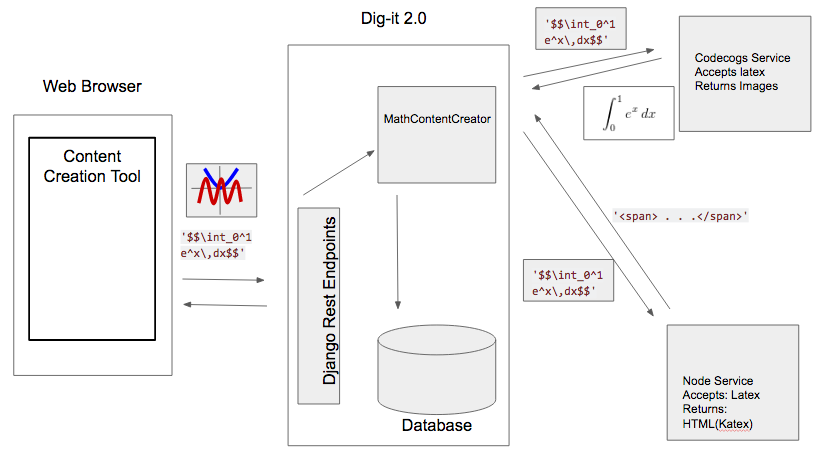
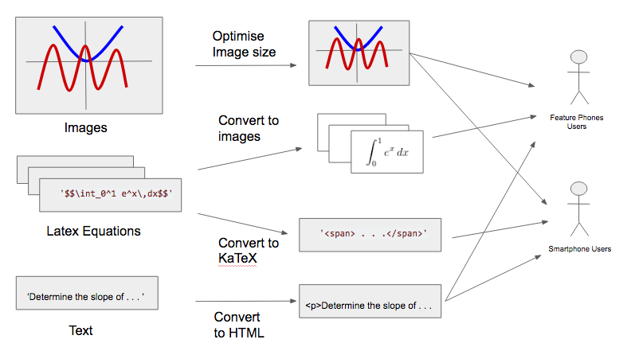

By Nathan Begbie
This project presents the development of tools for the creation and optimisation of mathematical content for Dig-it. Dig-it's current tools and workflows were found to be inefficient and costly. Given the cost of data and the importance of user experience in fast loading sites, it was also important that content delivered to users be optimised. This project focussed on creating a tool for the creation of mathematical content that could be used on their platform and optimise the content that was delivered to users. This project resulted in the creation of a browser-based tool that allows content creators to replace the use of their current tools used to create mathematical content (MS Word). The creation of tools for automated content optimisation of content was successful in reducing page-size by more than half. These tools were integrated into a fully functional prototype which received high usability ratings and overall met the clients wishes.
Dig-it is a mathematics mobi-site aimed at high school students. It supplies them with questions on a weekly basis and rewards them with airtime if a certain percentage of questions are answered correctly. Dig-it currently operates on a small scale with roughly 1500 students from Grades 10 to 12. In the next year, Dig-it will be scaling to a national level of over 100 000 students in 3 provinces.
In order to scale, it is important that the platform be managed properly. Unfortunately the platform faces a number of issues, in particular with how content is managed on the platform. This is partly influenced by the dependence on external tools to create mathematical content. The current workflow for content creation is that a question is created in a Word document, using text, images and Word’s WYSIWYG equation editor to create equations. The text and images are then copied and pasted into a web-form, while screenshots are taken of the equations and uploaded to the web-form. The Dig-it team’s reliance on this tool and this unwieldy, time-intensive and unoptimised process was iden- tified this as one the main blockers to optimising Dig-it’s work flows.
The aim of this project was to optimise content creation, management and delivery. This part of the project in particular had two aims.
This involved a user-centered approach to creating a toolbar with the Dig-it team. There were also a number of functional requirements.
These were all met with the funcional prototype.
This process involved taking a sample of Dig-it's current questions, extracting it into a measurable format, then investigating ways in which to render mathematical content. It was found that rendering latex as images was the most effective way to display information.
